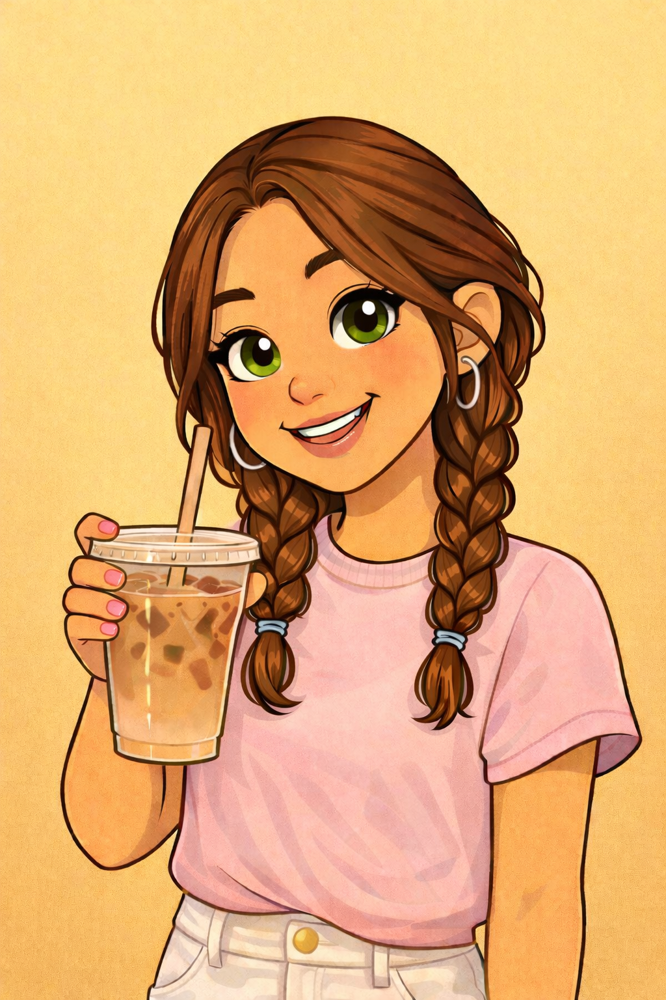

Email: clarapeirson@gmail.com
Phone: (6507963969)

I am a college student studying education and psychology. I am passionate about social justice, making school feel safe and fun, as well as equal education for all students. I enjoy working with kids, learning about their development and learning how to help students feel confident when learning.
Bachelor of Arts in Education
University of Oregon
Expected Graduation: 2028
This project uses Python's Turtle graphics library to create a colorful scene with houses, a sun, clouds, and grass. The program uses functions to draw shapes like squares, triangles, rectangles, and circles while positioning them using coordinates.
View CodeThis Python program draws a simple house using Turtle graphics. It demonstrates loops, shape drawing, and color fills to create a square base and triangular roof.
View CodeThis project analyzes text using the spacy natural language processing library. The program calculates statistics such as word counts and identifies the most frequent words after removing stop words and punctuation.
View Code